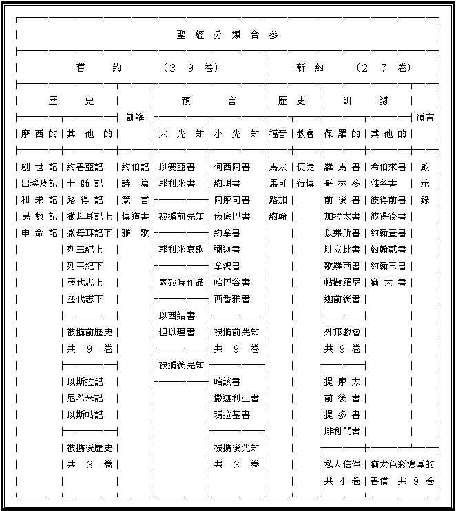

聖經綜纜緒論
Ａ）聖經是什麼?
「聖經」來自希臘文
Ｂｉｂｌｉａ它的單數是Ｂｉｂｌｉｏｎ，原意是「叢書」，但聖經是由六十六本書集合而成的一部書。英文Ｂｉｂｌｅ是從希臘文轉借而來，加上定冠詞Ｔｈｅ後，可以譯為「書中的書」，故中文翻作「聖經」是極為恰當。猶太人常稱「聖經」作「書」或「聖書」，新約作者卻常稱之為「經」。按保羅在哥林多後書三章十四節的話，可以把聖經分為新舊約，稱主耶穌降生以前的聖經成舊約，而主耶穌升天以後的聖經作新約，新約實是舊約的實現與成全。
Ｂ）聖經的表號
１）評 論 者：
「 神的話是．．．．．．人心中的思念和意志的評論者。」 來四：１２原文直譯２）是燈又是光：
「你的話是我腳前的燈，是我路上的光。」詩一一九：１０５３）是 鏡 子：
「．．．．．．因為聽道而不行道的，就像人對著鏡子看自己本來的面目，．．．．．．惟有詳細察看那全備使人自由之律法的，．．．．」雅一：２２-２５４）洗 濯 盆：
「要用水藉著道把教會洗淨，成為聖潔，．．．．．．」弗五：２６５）是 糧 食：
ａ）小嬰孩的靈奶：
「就要愛慕那純淨的靈奶，像纔生的嬰孩愛慕奶一樣，．．．．．」彼前二：２ｂ）饑餓人的麵飽：
「．．．．．．人活著不是單靠食物，乃是靠 神口裡所出的一切話。」申八：３ｃ）強壯者的乾糧：
「惟獨長大成人的，纔能喫乾糧，．．．．．．」來五：１４ｄ）屬靈人的甘甜：
「．．．．．．比蜜甘甜，且比蜂房下滴的蜜甘甜。」詩十九：１０６）是 真 金：
「都比金子可羡慕，且比極多的精金可羡慕。」詩十九：１０「你口中的訓詞與我有益，勝於千萬的金銀。」詩一一九：７２
７）是錘又是火：
「耶和華說我的話豈不像火，又像能打碎磐石的大錘麼？」耶廿三：２９８）聖靈的寶劍：
「．．．．．．拿著聖靈的寶劍，就是 神的道。」弗六：２０９）是 種 子：
「蒙了重生，．．．．．．由於不能壞的種子，是藉著 神活潑常存的道。」彼後一：２２１０）是 太 陽：
詩十九：１-６１１）是雨及是雪：
「雨雪從天而降，．．．．．．我口所出的話也必如此．．．．．．」 賽五十五：１０-１１１２）是 神的道：
「 神的道是活潑的，是有功效的．．．．．．」來四：１２「太初有道，道與 神同在，道就是 神。」約一：１
Ｃ）聖經的要旨───
弗一：３-１４救贖是由父 神計劃定旨，基督親身作成，聖靈來顯明在人心，撒但雖極力抵擋，但相信的人至終卻享受救贖。
ＧＯＤ ＴＨＯＵＧＨＴ ＩＴ， ＣＨＲＩＳＴ ＷＲＯＵＧＨＴ ＩＴ， ＴＨＥ ＨＯＬＹ ＳＰＩＲＩＴ ＢＲＯＵＧＨＴ ＩＴ， ＴＨＥ ＤＥＶＩＬ ＦＯＵＧＨＴ ＩＴ，ＢＵＴ Ｉ ＧＯＴ ＩＴ．
Ｄ）聖經的目的
１）使人能得救
「並且知道你是從小明白聖經，這聖經能使你因信基督耶穌得救。」提後三：１５
２）使人得造就
「聖經都是 神所默示的，於教訓、督責、使人歸正、教導人學義，都是有益的，叫屬 神的人得以完全，豫備行各樣的善事。」提後三：１６-１７
３）使人能信道
「可見信道是從聽道來的，聽道是從基督的話來的。」羅十：１７
４）使人得盼望
「從前所寫的聖經都是為教訓我們寫的，叫我們因聖經所生的忍耐和安慰，可以得著盼望。」羅十五：４
５）使人得警戒
「他們遭遇這些事，都要作為鑑戒，並且寫在經上，正是警戒我們這末世的人。」林前十：１１
６）為基督作證
「你們查考聖經，因為你們以為內中有永生，給我作見證的就是這經。」約五：３９
Ｅ）新舊約的正典
１）舊約：
ａ）猶太的傳統：
他們歷代以來慢慢以不同的經卷，列為聖卷，雖不知他們將卅九卷列為正典的正確時間，但一般相信是在被擄回歸後經以斯拉編定舊約正典。但必為新約之前。從他們抄寫聖經就可以知道他們對 神的道之尊重，何況他們要揀選為聖經正典呢？我們基督徒更應尊重這些正典。這些正典都能經得起歷史的考證，當中有關 神的計劃和心意的記述是相同並連貫。ｂ）作者的地位：
特別是知道名字的作者，他們的地位都是 神的僕人，先知或聖殿中事奉的，我們有理由相信這都是 神的話。ｉ）摩西五經：
作者摩西，為 神人為先知。ｉｉ）先 知 書：
作者皆為先知，他們常有一句話：「耶和華的話臨到我」ｉｉｉ）詩 歌 書：
作者為大衛與所羅門，為以色列最出色的君王，也被稱為 神的僕人。ｉｖ）歷 史 書：
他們雖不為人知，但他們的資料來源是根據先知們的著作，代下十二：１５，示瑪雅與易多；代下卅：２４，題到耶戶先知曾著歷史書；代下廿六：２２、卅二：３２，以賽亞；代下卅三：１９，何賽先知，故此他們的資料是真確的，可以相信的。ｃ）新約的承認：
經主耶穌的見證，太五：１７，將舊約分為律法書及先知書，主說律法的一點一劃都不能廢去，並要成全律法。路廿四：４４-４５，主耶穌更看重詩篇的重要。新約作者們的承認及引用，提後三：１６，彼後一：２０-２１，．．．．．．２）新約：
使徒們受聖靈默示留下來的著作，並且這些著作顯出有聖靈默示的權威，成為眾教會的幫助及指導。在主後三九七年在迦太基會議中被眾教會確認。
Ｆ）新舊約的比較
|
類 別 |
舊 約 |
新 約 |
|
第一個名字 |
神，創一：１ |
基督，太一：１ |
|
第一對兄弟 |
該隱殺亞伯 |
安得烈領彼得見主 |
|
第一件神蹟 |
摩西將水變血，帶來哀號。 |
基督以水變酒，帶來歡樂。 |
|
第一句說話 |
神問人：「你在哪裡？」 |
博士問：「祂在哪裡？」 |
|
主要部份 |
律法 |
恩典 |
|
總結的話 |
咒詛，瑪四：６ |
祝福，啟廿二：２１ |
|
誰愛誰 |
你要愛耶和華你的 神，申六：５ |
神愛世人．．．．．．約三：１６ |
|
在 起 初 |
在 末 了 |
|
神創造天地 |
新天新地 |
|
撒但進入引誘了人 |
撒但被摔下去，再不能引誘人 |
|
人離了神而生存 |
基督離了 神而拯救人 |
|
罪惡、痛苦、憂慮及死亡 |
再沒有罪惡、痛苦、憂慮及死亡 |
|
地被咒詛 |
沒有咒詛了 |
|
生命樹──人被逐了 |
生命樹──有權利享受 |
|
人躲藏 神的面 |
神住在人中間 |
|
天堂被失 |
天堂復得 |
|
首先的亞當失敗損失一切 |
末後的亞當「必不失敗」 |
|
第一個人自己穿上衣服 |
末了的人替我們穿上 |
|
女人從男人裂開的身體出來 |
另外一邊裂開──成就了教會 |
|
一對無罪的男女婚合 |
羔羊的婚筳 |
|
用水滅沒地 |
用火毀滅地 |
|
言語分亂 |
多舌發出祝福的言語 |
Ｇ）聖經所用的文字
１）舊約所用的文字
舊約全書除了拉四：８至六：１８、拉七：１２－２６、耶十二：１１及但二：４至七：２８使用蘭文外，其餘均使用希伯來文。因為希伯來文一種圖畫（象形）文字，能把 神在祂百姓之中的作為，活潑生動地描繪出來。並因希伯來文是一種親切、富感情的言語，它不單單訴諸人的頭腦或理性之中，更進入人的內心和情感裡面。因著希伯來文有描繪並親切而生動的特質， 神選用它來表達舊約傳記式的真理。
２）新約所用的文字
新約全書乃是用希臘文寫成的，因為希臘文是一種智慧的言語，它需要經過頭腦的思想，而不單是從心裡想到，就說出來的。希臘文更適用於將 神所啟示之溝通思想或是反映編篡整理，好使它成為一種簡單的傳達方式。它比希伯來文更易於把可靠的變成可了解的言語。正因這原故，新約希臘文是最好效的媒介，用以表達新約的真理。由於希臘文具有一種技術上的精確性，那是希伯來文所缺乏的，因此舊約的希伯來文所表達的一般性神學真理，在新約希臘文中，便能精確而簡潔地陳述出來。另外，希臘在當時幾乎是一種全世界通用的言語。
Ｈ）聖經的分卷、分章、分節
１）分卷：
摩西五經是最早的時候是連在一起的，後因方便查考才有分卷的出現，而在希伯來文聖經中的撒母耳記、列王紀及歷代志原稿是沒有分上下兩部份的，可是以斯拉記及尼希米記、十二小先知書是各自被合成一部的。今天舊約的分卷排列方式並名稱是始自舊約希臘文七十士譯本的出現。新約的分卷卻沒有舊約般複雜，惟正典問題較多爭議。２）分章：
十三世紀中葉，一位天主教紅衣主教休各（ＨＵＧＯ）為作更容易參考聖經而把當時的拉丁文聖經分章。３）分節
ａ）舊約：
在十五世紀中葉，一猶太人拉比末底改．拿單 （ＲＡＢＢＩ ＭＯＲＤＥＣＡＩ ＮＡＴＨＡＮ），為更方便查考聖經，按休各的分章，再把舊約分成節數。ｂ）新約：
在十六世紀中葉，一法國印刷商及印刷聖經者羅拔．司提芬斯 （ＲＯＢＥＲＴ ＳＴＥＰＨＥＮＳ）按照休各的分章及拉比拿單的舊約分節，再把新約聖經分節，並且於一五五一年完成。|
Ｉ）聖經的編排希 伯 來 文 聖 經 的 編 排 法 |
||
|
律法書 （ＴＯＲＡＨ） |
先知書 （ＮＥＢＨＩＩＭ） |
聖 卷 （ＫＥＴＨＵＢＨＩＭ） |
|
１． 創 世 記 ２． 出埃及記 ３． 利 未 記 ４． 民 數 記 ５． 申 命 記 |
Ａ．前先知書 ６．約書亞記 ７．士 師 記 ８．撒母耳記 ９．列 王 紀 Ｂ．後先知書 １０．以賽亞書 １１．耶利米書 １２．以西結書 １３．十二小先知書 |
Ａ．詩歌書 １４．詩篇 １５．箴言 １６．約伯記 Ｂ．五書卷 （ＭＥＧＩＬＯＴＨ）１７．雅歌 １８．路得記 １９．耶利米哀歌 ２０．傳道書 ２１．以斯帖記 Ｃ．歷史書 ２２．但以理書 ２３．以斯拉─尼希米記 ２４．歷代志 |
|
基 督 教 舊 約 聖 經 的 編 排 法 |
||
|
律法書（摩西五經） |
詩 歌 書 |
|
|
１． 創 世 記 ２． 出埃及記 ３． 利 未 記 ４． 民 數 記 ５． 申 命 記 |
１８． 約伯記 １９． 詩 篇 ２０． 箴 言 ２１． 傳道書 ２２． 雅 歌 |
|
|
歷 史 書 |
先 知 書 |
|
|
６． 約書亞記 ７． 士 師 記 ８． 路 得 記 ９． 撒母耳記上 １０． 撒母耳記下 １１． 列王紀上 １２． 列王紀下 １３． 歷代志上 １４． 歷代志下 １５． 以斯拉記 １６． 尼希米記 １５． 以斯帖記 |
Ａ．大先知書 ２３．以賽亞書 ２４．耶利米書 ２５．耶利米哀歌 ２６．以西結書 ２７．但以理書 |
Ｂ．小先知書 ２８．何西阿書 ２９．約珥書 ３０．阿摩司書 ３１．俄底巴書 ３２．約拿書 ３３．彌迦書 ３４．拿鴻書 ３５．哈巴谷書 ３６．西番雅書 ３７．哈該書 ３８．撒迦利亞書 ３９．瑪拉基書 |

聖經目錄歌
舊約
１．創世記載萬物開始，選民救贖出埃及。 利未顯明聖潔事主，曠野靈程民數記。
申命記強調須遵命，約書亞記得基業。 士師記神選立領袖，路得記贖回一切。
２．撒母耳上民要立王，撒母耳下顯神權。 列王紀上兩國分裂，列王紀下罪惡顯。
歷代志上聖殿預備，歷代志下殿成功。 以斯拉記被擄歸回，尼希米記建聖殿。
３．以斯帖記民蒙奇恩，約伯記載在試煉。 詩篇重在向神敬拜，尋求智慧是箴言。
傳道書論日下虛空，雅歌大旨是愛情。 以賽亞乃舊約福音，耶利米拆毀栽植。
４．哀歌因罪國破家亡，以西結書重盼望。 但以理書真是奧祕，何西阿主施恩愛。
約珥書上是論主日，阿摩司講神公義。 懲治以東俄巴底亞，外邦蒙恩是約拿。
５．彌迦全書多論救法，拿鴻審判一大城。 哈巴谷書因信得生，西番雅書神權能。
哈該鼓吹重建聖殿，撒迦利亞言未來。 瑪拉基書律法總結，三十九卷為預備。
新約
１．馬太福音設立天國，馬可福音論服事。 路加福音人子模樣，約翰福音為神子。
使徒行傳聖靈見證，羅馬救恩有滋味。 哥林多前屬靈智慧，哥林多後重安慰。
２．加拉太書注重信心，以弗所書講合一。 腓立比書喜樂為要，注重豐滿歌羅西。
帖前專題耶穌降臨，帖後勸言忍耐多。 提摩太前重在榜樣，提摩太後論工作。
３．提多書上多有勸戒，腓利門書重收納。 希伯來書多講更美，雅各書論善行佳。
彼得前書大旨寶貴，彼得後書美德顯。 約翰壹書愛的結合，約翰貳書命令傳。
４．約翰三書大旨同工，專論保守猶大書。 啟示錄書重在得勝，主得勝門徒亦勝。
二十七卷新約全書，引人歸主得救恩。 共宣真理完成使命，得建天國候主臨。